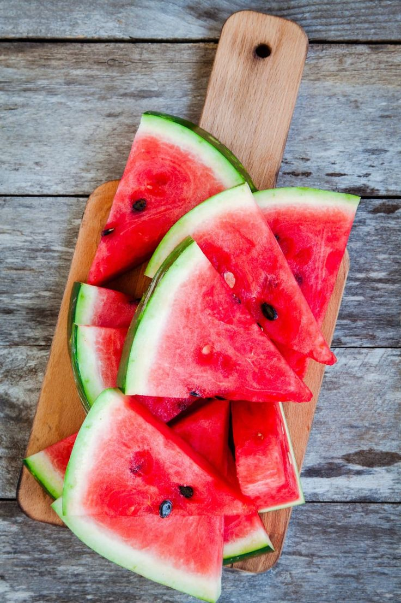
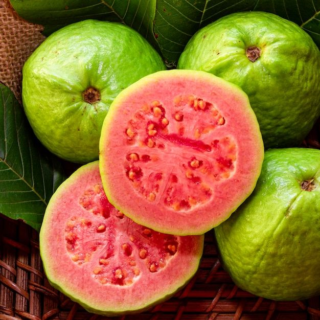
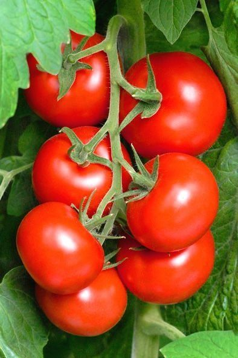

O que o licopeno faz?
O licopeno pertence à família dos carotenoides, uma classe de pigmentos que dá cor a várias partes das plantas, como frutas, vegetais e folhas. Ele é o pigmento responsável pela coloração avermelhada de alimentos como tomates, melancias, cranberries e uvas. Além de proporcionar cor, o licopeno está associado a diversas atividades biológicas benéficas para a saúde.
Benefícios do licopeno para a saúde
O licopeno oferece inúmeros benefícios ao organismo, como efeitos antioxidantes, anti-inflamatórios, anticancerígenos e protetores. Essas propriedades ajudam a prevenir diversas condições de saúde, promovendo o bom funcionamento do corpo.
Saúde óssea
Pesquisas indicam que os efeitos antioxidantes do licopeno podem reduzir a perda óssea, melhorar a densidade óssea e fortalecer os ossos. Esses benefícios são particularmente úteis para pessoas em risco de osteoporose, como adultos mais velhos e mulheres na pós-menopausa.
Proteção contra o câncer
O licopeno possui propriedades anticancerígenas, inibindo o crescimento de células cancerígenas ao proteger as moléculas celulares da oxidação. Estudos mostram que altos níveis de licopeno podem proteger contra cânceres como o de próstata e colorretal, além de inibir a disseminação de células cancerígenas.
Saúde do esperma e fertilidade
O licopeno também beneficia a saúde reprodutiva masculina, melhorando parâmetros como motilidade e contagem de espermatozoides, além de aumentar a viabilidade do esperma. Estudos sugerem que a suplementação com licopeno pode melhorar as taxas de gravidez.

Saúde cardíaca
O licopeno está associado a efeitos cardiovasculares positivos, como a melhoria dos níveis de colesterol "bom" (HDL) e a redução do colesterol "ruim" (LDL). Além disso, o licopeno ajuda a diminuir a inflamação, reduzindo o risco de doenças cardiovasculares e derrames.
Espaço para Anúncio no Conteúdo
Proteção contra danos solares
O licopeno pode proteger a pele contra os danos causados pela exposição ao sol, ajudando a prevenir o envelhecimento precoce e o câncer de pele. No entanto, ele não deve substituir a proteção solar adequada.
Saúde ocular
Carotenoides como o licopeno são essenciais para a saúde ocular, protegendo a retina e o cristalino da luz prejudicial. Pesquisas sugerem que o licopeno pode ajudar a prevenir a formação de cataratas e a degeneração macular.

Proteção contra condições neurológicas
O licopeno pode ajudar a prevenir condições neurológicas, como Alzheimer e Parkinson, reduzindo a dor causada por danos nos nervos e tecidos e prevenindo a perda de memória e convulsões.
Fontes alimentares de licopeno
Alimentos ricos em licopeno incluem frutas e vegetais de cores vermelhas e rosadas, como tomates, goiabas, toronjas, melancias, cranberries e pimentões. Produtos à base de tomate, como extrato e ketchup, também são excelentes fontes devido à maior biodisponibilidade após o tratamento térmico.
Suplementos de licopeno
O licopeno pode ser encontrado em suplementos alimentares, tanto em complexos de carotenoides quanto em multivitamínicos ou suplementos específicos de licopeno.
Informações sobre dosagem
Não há uma recomendação formal de ingestão diária de licopeno. Estudos indicam que doses de 15 a 45 mg por dia são seguras e benéficas. Sempre consulte um profissional de saúde antes de iniciar qualquer suplementação.
Efeitos colaterais do licopeno
Em geral, o licopeno é considerado seguro. No entanto, o consumo excessivo pode causar uma leve descoloração da pele. Pessoas grávidas, amamentando ou tomando medicamentos anticoagulantes devem ter cautela e consultar um profissional de saúde antes de consumir licopeno em grandes quantidades.
Redução do Risco de Câncer de Próstata
Estudos mostram que homens que consomem uma dieta rica em alimentos que contêm licopeno têm menos probabilidade de desenvolver câncer de próstata. O licopeno ajuda a proteger as células da próstata contra danos oxidativos, que podem levar à formação e crescimento de células cancerígenas. Além disso, ele pode inibir a progressão de tumores existentes, retardando seu crescimento e dificultando a disseminação.
O licopeno exerce seus efeitos benéficos através da neutralização dos radicais livres, que são moléculas instáveis que causam danos às células. Ao reduzir o estresse oxidativo na próstata, o licopeno não apenas protege contra o desenvolvimento do câncer, mas também pode ajudar a manter a função saudável da próstata à medida que os homens envelhecem.
Evidências Científicas:
Vários estudos epidemiológicos e ensaios clínicos têm demonstrado a relação entre o consumo de licopeno e a saúde da próstata. Um estudo publicado no Journal of the National Cancer Institute indicou que homens com altos níveis de licopeno no sangue apresentavam uma redução significativa no risco de câncer de próstata. Outro estudo realizado pela Universidade de Harvard encontrou uma correlação entre o consumo regular de molho de tomate (uma fonte rica em licopeno) e uma menor incidência da doença.
Espaço para Anúncio no Conteúdo
Referências:
- Khan UM, Sevindik M, Zarrabi A, et al. Lycopene: Food Sources, Biological Activities, and Human Health Benefits. Oxid Med Cell Longev. 2021;2021:2713511. Published 2021 Nov 19. doi:10.1155/2021/2713511
- Ardawi MM, Badawoud MH, Hassan SM, et al. Lycopene treatment against loss of bone mass, microarchitecture and strength in relation to regulatory mechanisms in a postmenopausal osteoporosis model. Bone. 2016;83:127-140. doi:10.1016/j.bone.2015.10.017
- Walallawita US, Wolber FM, Ziv-Gal A, Kruger MC, Heyes JA. Potential Role of Lycopene in the Prevention of Postmenopausal Bone Loss: Evidence from Molecular to Clinical Studies. Int J Mol Sci. 2020;21(19):7119. Published 2020 Sep 27. doi:10.3390/ijms21197119
- Reuter S, Gupta SC, Chaturvedi MM, Aggarwal BB. Oxidative stress, inflammation, and cancer: how are they linked?. Free Radic Biol Med. 2010;49(11):1603-1616. doi:10.1016/j.freeradbiomed.2010.09.006
- Babaei A, Asadpour R, Mansouri K, Sabrivand A, Kazemi-Darabadi S. Lycopene protects sperm from oxidative stress in the experimental varicocele model. Food Sci Nutr. 2021;9(12):6806-6817. Published 2021 Oct 17. doi:10.1002/fsn3.2632
- Durairajanayagam D, Agarwal A, Ong C, Prashast P. Lycopene and male infertility. Asian J Androl. 2014;16(3):420-425. doi:10.4103/1008-682X.126384
- Showell MG, Mackenzie-Proctor R, Jordan V, Hart RJ. Antioxidants for female subfertility. Cochrane Database Syst Rev. 2020;8(8):CD007807. Published 2020 Aug 27. doi:10.1002/14651858.CD007807.pub4
- Palozza P, Catalano A, Simone RE, Mele MC, Cittadini A. Effect of lycopene and tomato products on cholesterol metabolism. Ann Nutr Metab. 2012;61(2):126-134. doi:10.1159/000342077
- Chen J, Song Y, Zhang L. Effect of lycopene supplementation on oxidative stress: an exploratory systematic review and meta-analysis of randomized controlled trials. J Med Food. 2013;16(5):361-374. doi:10.1089/jmf.2012.2682
- Li X, Xu J. Dietary and circulating lycopene and stroke risk: a meta-analysis of prospective studies [published correction appears in Sci Rep. 2014;4:5906]. Sci Rep. 2014;4:5031. Published 2014 May 22. doi:10.1038/srep05031
- Sun-damaged Skin (Photoaging). Cleveland Clinic. October 28 2022. URL.
- Rizwan M, Rodriguez-Blanco I, Harbottle A, Birch-Machin MA, Watson RE, Rhodes LE. Tomato paste rich in lycopene protects against cutaneous photodamage in humans in vivo: a randomized controlled trial. Br J Dermatol. 2011;164(1):154-162. doi:10.1111/j.1365-2133.2010.10057.x
- Stahl W, Heinrich U, Aust O, Tronnier H, Sies H. Lycopene-rich products and dietary photoprotection. Photochem Photobiol Sci. 2006;5(2):238-242. doi:10.1039/b505312a
- Johra FT, Bepari AK, Bristy AT, Reza HM. A Mechanistic Review of β-Carotene, Lutein, and Zeaxanthin in Eye Health and Disease. Antioxidants (Basel). 2020;9(11):1046. Published 2020 Oct 26. doi:10.3390/antiox9111046
- Gupta SK, Trivedi D, Srivastava S, Joshi S, Halder N, Verma SD. Lycopene attenuates oxidative stress induced experimental cataract development: an in vitro and in vivo study. Nutrition. 2003;19(9):794-799. doi:10.1016/s0899-9007(03)00140-0
- Schleicher M, Weikel K, Garber C, Taylor A. Diminishing risk for age-related macular degeneration with nutrition: a current view. Nutrients. 2013;5(7):2405-2456. Published 2013 Jul 2. doi:10.3390/nu5072405
- Zhang FF, Morioka N, Kitamura T, et al. Lycopene ameliorates neuropathic pain by upregulating spinal astrocytic connexin 43 expression. Life Sci. 2016;155:116-122. doi:10.1016/j.lfs.2016.05.021
- Kuhad A, Sharma S, Chopra K. Lycopene attenuates thermal hyperalgesia in a diabetic mouse model of neuropathic pain. Eur J Pain. 2008;12(5):624-632. doi:10.1016/j.ejpain.2007.10.008
- Bhardwaj M, Kumar A. Neuroprotective Effect of Lycopene Against PTZ-induced Kindling Seizures in Mice: Possible Behavioural, Biochemical and Mitochondrial Dysfunction. Phytother Res. 2016;30(2):306-313. doi:10.1002/ptr.5533
- Lycopene. NIH. Medline Plus. September 8 2021. URL.
- Jawaid A. Shaw, Meghashyam Koti. Orange discoloration of the palms. CMAJ Apr 2009, 180 (8) 895; DOI: 10.1503/cmaj.071335